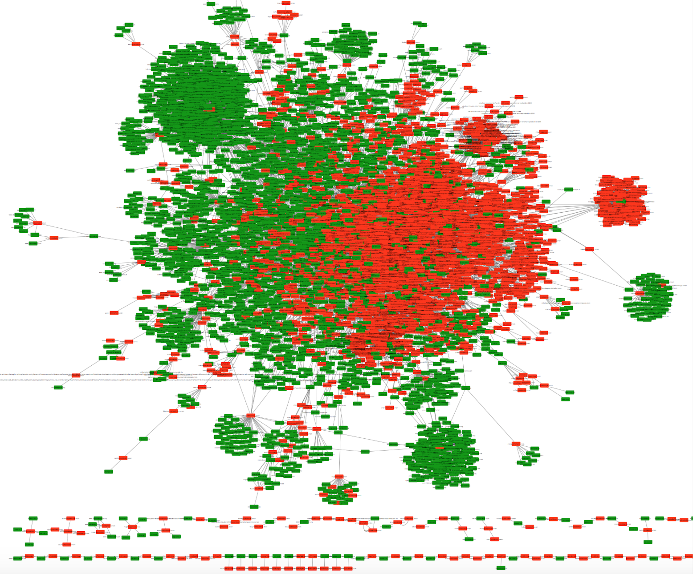
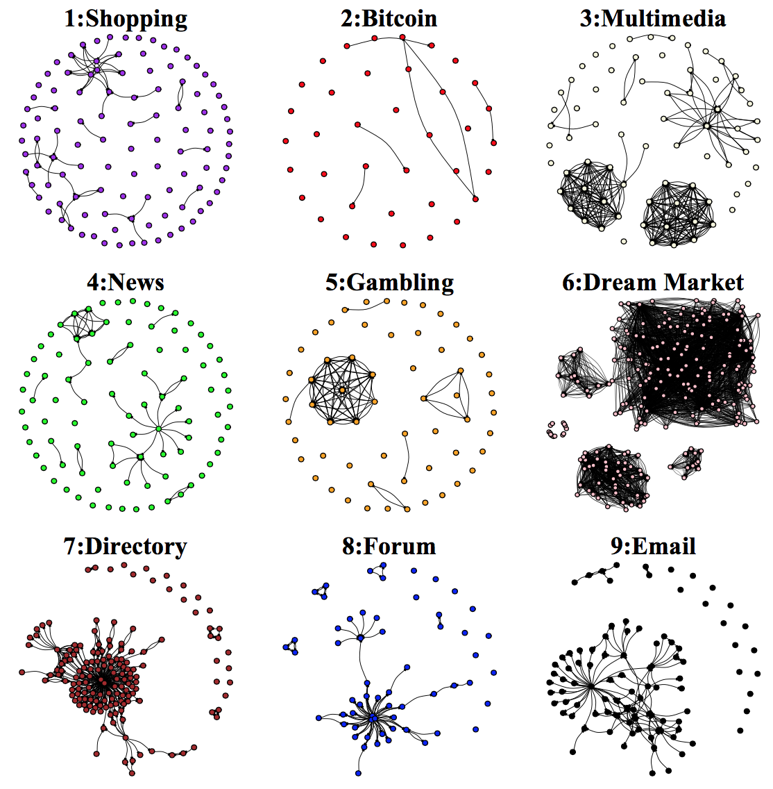
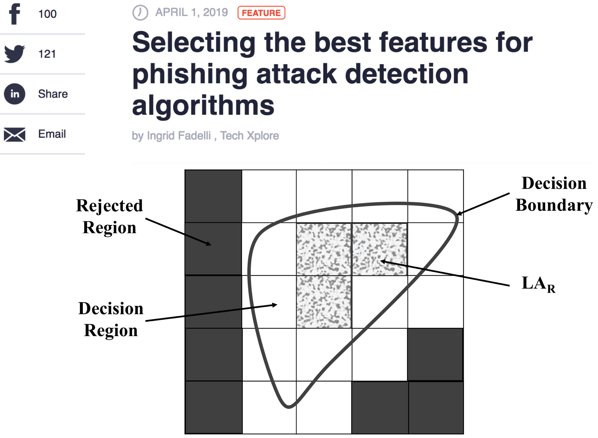
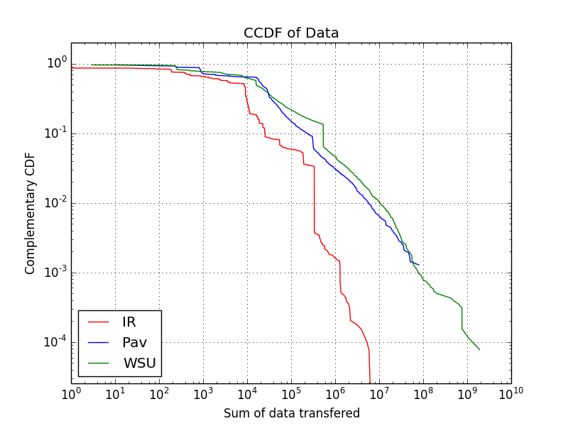
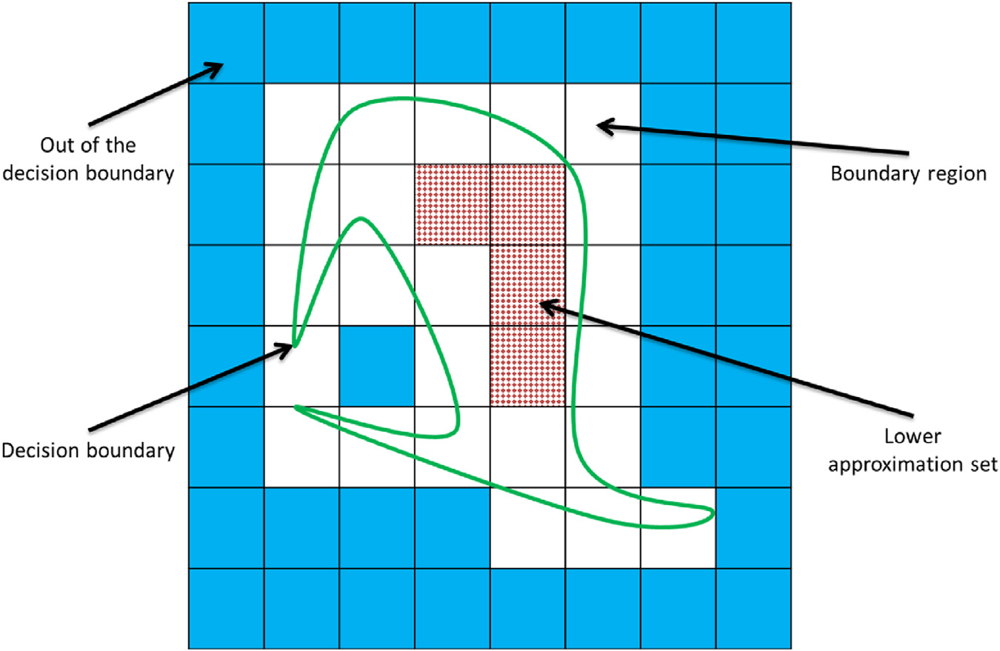
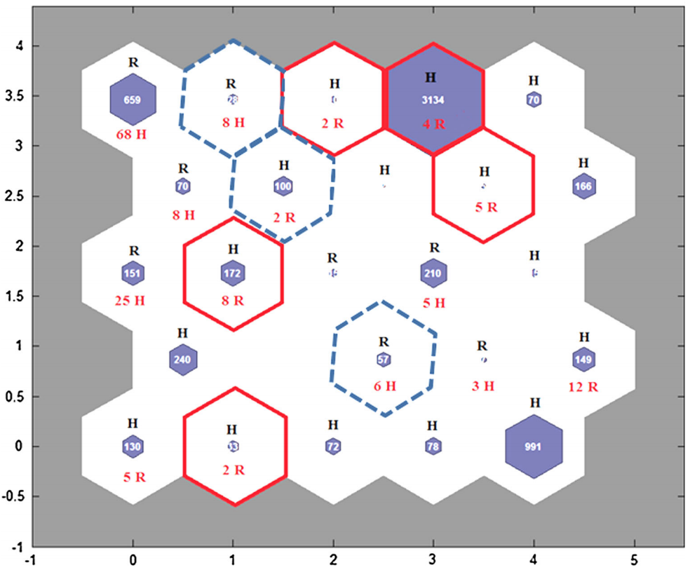
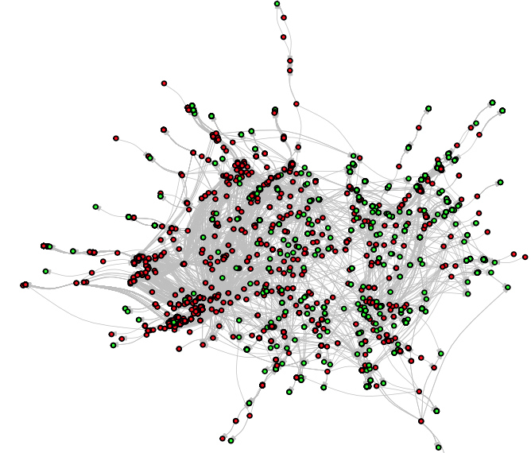
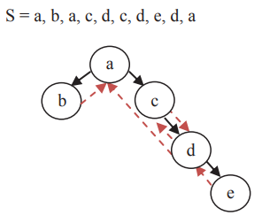
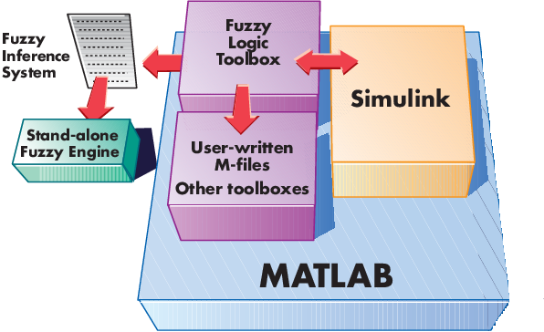

Biography
I am an assistant professor in the department of Computer Science at Central Connecticut State University. I received my Ph.D. in Computer Science from Wright State University. I work at the intersection of cyber security and network science with the aim of improving proactive cyber threat intelligence applications in protecting privacy of Internet users. I am particularly interested in applied machine learning and characterization, measurements, and analytics for complex cyber-security and socio-technical systems.
Education
- Ph.D., Computer Science (2017-May 2020)
- Wright State University, Dept. of Computer Science and Engineering, Dayton, Ohio, USA
- Focus: Network science, machine learning, soft computing, and statistical data analysis for real-world data sets
- M.S., Computer Engineering-Software (2012-2014)
- Imam Reza Intl. University, Dept. of Computer and Information Technology, Iran
- Thesis: A Proposed Algorithm Based on Markov Clustering for Web Robot Detection
- Focus: Evolutionary computation and optimization methods, soft computing
- B.S., Computer Engineering-Software (2007-2011)
- Ferdowsi University, Dept. of Computer Engineering, Iran
- Thesis: Designing and Implementing a Web-based Account Framework
- Focus: Computer networks, web programming, database design & development
Honors and Awards
|
Selected Projects
|  |
A First Look at References from the Dark to Surface Web WorldTor is one of the most well-known networks that protects the identity of both content providers and their clients against any tracking or tracing on the Internet. So far, most research attention has been focused on investigating the security and privacy concerns of Tor and characterizing the topic or hyperlink structure of its hidden services. However, there is still lack of knowledge about the information leakage attributed to the linking from Tor hidden services to the surface Web. This work addresses this gap by presenting a broad evaluation of the network of referencing from Tor to surface Web and investigates to what extent Tor hidden services are vulnerable against this type of information leakage. The analyses also consider how linking to surface websites can change the overall hyperlink structure of Tor hidden services. They also provide reports regarding the type of information and services provided by Tor domains. Results recover the dark-to-surface network as a single massive connected component where over 90% of Tor hidden services have at least one link to the surface world despite their interest in being isolated from surface Web tracking. We identify that Tor directories have closest proximity to all other Web resources and signicantly contribute to both communication and information dissemination through the network which emphasizes on the main application of Tor as information provider to the public. Our study is the product of crawling near 2 million pages from 23,145 onion seed addresses, over a three-month period. The result of this work is currently under review by the journal of “ACM Transactions on Management Information Systems (TMIS)”. You can also access its ArXiv version here . |
|  |
A Broad Evaluation of the Tor English Content EcosystemTor is among most well-known dark net in the world. It has noble uses, including as a platform for free speech and information dissemination under the guise of true anonymity, but may be culturally better known as a conduit for criminal activity and as a platform to market illicit goods and data. Past studies on the content of Tor support this notion, but were carried out by targeting popular domains likely to contain illicit content. A survey of past studies may thus not yield a complete evaluation of the content and use of Tor. This work addresses this gap by presenting a broad evaluation of the content of the English Tor ecosystem. We perform a comprehensive crawl of the Tor dark web and, through topic and network analysis, characterize the `types' of information and services hosted across a broad swath of Tor domains and their hyperlink relational structure. We recover nine domain types defined by the information or service they host and, among other findings, unveil how some types of domains intentionally silo themselves from the rest of Tor. We also present measurements that (regrettably) suggest how marketplaces of illegal drugs and services do emerge as the dominant type of Tor domain. Our study is the product of crawling over 1 million pages from 20,000 Tor seed addresses, yielding a collection of over 150,000 Tor pages. The full paper titled “A Broad Evaluation of the Tor English Content Ecosystem” which presents the report of this project has been accepted at 11th ACM Conference on Web Science (WebSci2019) . You can access the data extracted in this work at Github . |
|  |
Enhancing Phishing attack detectionPhishing as one of the most well-known cybercrime activities is a deception of online users to steal their personal or confidential information by impersonating a legitimate website. Several machine learning-based strategies have been proposed to detect phishing websites. These techniques are dependent on the features extracted from the website samples. However, few studies have actually considered efficient feature selection for detecting phishing attacks. In this work, we investigate an agreement on the definitive features which should be used in phishing detection. We apply Fuzzy Rough Set (FRS) theory as a tool to select most effective features from three benchmarked data sets. The selected features are fed into three often used classifiers for phishing detection. To evaluate the FRS feature selection in developing a generalizable phishing detection, the classifiers are trained by a separate out-of-sample data set of 14,000 website samples. The paper titled “Fuzzy Rough Set Feature Selection to Enhance Phishing Attack Detection” which presents the report of this project has been accepted at International Conference on Fuzzy Systems (FUZZ-IEEE2019). You can also read the recent article of TechXplore about this work! |
|  |
Web traffic characterizationUnderstanding the qualities of Web robot traffic is essential to build mechanisms for mitigating the impact of their traffic on Web systems. This project presents an updated characterization of the navigational and session patterns of Web robot traffic across three Web servers in the United States, Europe, and the Middle East under 30 different features. The results indicate that some features may be fitted to the same heavy-tailed model across the Web servers, but the best fitting models for other features depend on the Web server. Due to some different tasks of Web robots and security policies set by website administrators, there are thus some features of Web robot traffic that cannot be universally modeled. The paper titled “Some (Non-)Universal Features of Web Robot Traffic” which presents the report of this project has been accepted at 52th Annual Conference on Information Sciences and Systems (CISS2018). |
|  |
Feature selection based on Fuzzy Rough Set theoryDespite emerging of Web 2.0 applications and increasing requirements to well-behaved Web robots, malicious ones can reveal irreparable risks for Web sites. Regardless of behavior of Web robots, they may occupy bandwidth and reduce performance of Web servers. In spite of many prestigious researches trying to characterize Web visitors and classify them, there is a lack of concentration on feature selection to dynamically choose attributes used to describe Web sessions. Therefore, in this research, a new algorithm is proposed based on Fuzzy Rough Set (RST) theory to better characterize and cluster Web visitors of three real Web sites. RST describes how a collection of data may be separated based on a decision boundary and an indiscernibility relation (Pawlak, 1982). The report of this research is resulted in “A soft computing approach for benign and malicious web robot detection” published in Expert Systems with Applications journal (Impact factor: 3.928). The (Source code) is also publicly available. |
|  |
Comparing Neural Network and DBSCAN in clustering Web usersToday world’s dependence on the Internet and the emerging of Web 2.0 applications significantly increased the requirement of web robots crawling the sites to support services and technologies. Regardless of the advantages of robots, they may occupy the bandwidth and reduce the performance of web servers. Despite a variety of studies, there is no accurate method for classifying huge data sets of web visitors in a reasonable amount of time. Moreover, this technique should be insensitive to the ordering of instances and produce deterministic accurate results. Therefore, in this research we present a density-based clustering approach using Density-Based Spatial Clustering of Applications with Noises (DBSCAN), to classify web visitors of two real large data sets and compare its efficiency with the performance of Self-Organizing Map as a Neural Network technique. For more information about the results of this research, please refer to “Detection of Web site visitors based on fuzzy rough sets” published in Soft Computing (Impact factor: 2.472). |
|  |
Using Markov Clustering for Web robot detectionThe MCL algorithm (Van Dongen, 2001) is a powerful method to cluster data points by simulating stochastic flows over an input graph. MCL has seen success in a variety of domains, such as social network analysis, knowledge base enrichment, community detection, and bioinformatics. The MCL algorithm is specified by an M(k×k) column stochastic matrix, representing probabilities of transitions within a complete graph on k nodes. Nodes of this graph correspond to a data point (i.e. a web session) while transition probabilities (specified by the matrix element mij) specify the strength of a relationship or the degree of similarity among them. MCL finds a clustering of nodes in the graph by transforming M with iterative applications of three operations, namely expand, inflate, and prune, until a convergence criterion is reached. |
|  |
Defining new navigational features to describe web crawlersTo describe web visitors, we suggest new features based on the behavioral patterns recorded in access log files of web servers. For instance, Penalty is a numerical attribute proposed based on the navigational patterns of humans which involve a large number of frequent back-and-forward movements and loops. Having a view restricted by the structure of links of a site to find the required information, “back” and “forward” option in web browser’s history and disorienting the humans during their visits are some reasons that cause such navigational patterns. While after the first crawl of a site, robots can detect where the required information resides and restrict their next requests to specific areas of that site. Penalty attribute penalizes each back-and-forward navigation or loop, and it is reasonable to expect a larger value for this attribute among human users than web robots. If interested, please refer to our paper, “A density based clustering approach for web robot detection”, published in International Conference on Computer and Knowledge Engineering (ICCKE), IEEE, (Accept Rate:22%). |
|  |
Using Fuzzy Inference System based on decision trees for Web robot classificationWeb administrators should pay special attention and closely inspect web sessions that correspond to web robots; because the traffic of these autonomous systems occupies the bandwidth, reduces the performance of web servers and in some cases, threaten the security of human users. In this research, we propose a novel fuzzy algorithm based on the decision trees. In order to overcome the curse of dimensionality issue and facilitate the designing of the fuzzy inference system, we use a correlation analysis to eliminate some features. For converting each filtered attribute to a fuzzy variable, a C4.5 decision tree is used. It is worth mentioning that making a decision tree is based on choosing the best feature with the most information gain metric in each level of the tree. Therefore, we can reduce the number of attributes again. Finally, the fuzzy rules are extracted from the C4.5 decision tree and the fuzzy inference model is made. |
Selected Publications
- M. Zabihimayvan, D. Doran (2019), “A First Look at References from the Dark to Surface Web World”, ACM Transactions on Management Information Systems (under review).
- M. Zabihimayvan, D. Doran (2019), “Fuzzy Rough Set Feature Selection to Enhance Phishing Attack Detection”, IEEE Conference on Fuzzy Systems (Accepted).
- M. Zabihimayvan, R. Sadeghi, D. Doran, M. Allahyari (2019), "A Broad Evaluation of the Tor English Content Ecosystem", 11th ACM Conference on Web Science (Accepted).
- M. Zabihimayvan, D. Doran (2018), “Some (Non-)Universal Features of Web Robot Traffic”, 52th Annual Conference on Information Sciences and Systems (CISS), IEEE, Princeton University, NJ, US.
- M. Zabihimayvan, R. Sadeghi, H. Nathan Rude, D. Doran (2017), “A soft computing approach for benign and malicious web robot detection”, Expert Systems with Applications, 87, 129-140, (Source code), (Impact factor: 3.928).
- J. Hamidzadeh, M. Zabihimayvan, R. Sadeghi (2017), “Detection of Web site visitors based on fuzzy rough sets”, Soft Computing, 22(7), 2175-2188, (Impact factor: 2.472).
- M. Zabihi, M. Vafaei Jahan, and J. Hamidzadeh (2014), "A density based clustering approach for web robot detection." International Conference on Computer and Knowledge Engineering (ICCKE), IEEE, (Accept Rate:22%).
- M. Zabihi, M. Vafaei Jahan, J. Hamidzadeh (2014). "A density based clustering approach to distinguish between web robot and human requests to a web server." The ISC International Journal of Information Security, 6 (1), 77-89.
Research Services
- Invited Talk
- Journal Editorial Board Member
- Journal Reviewer
- Conference program committee
- Conference Reviewer
- Scientific society